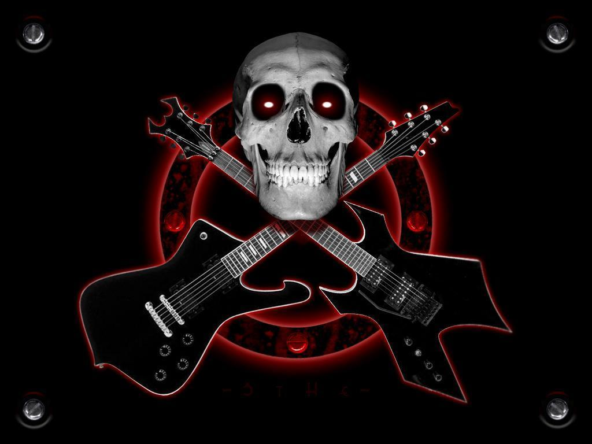
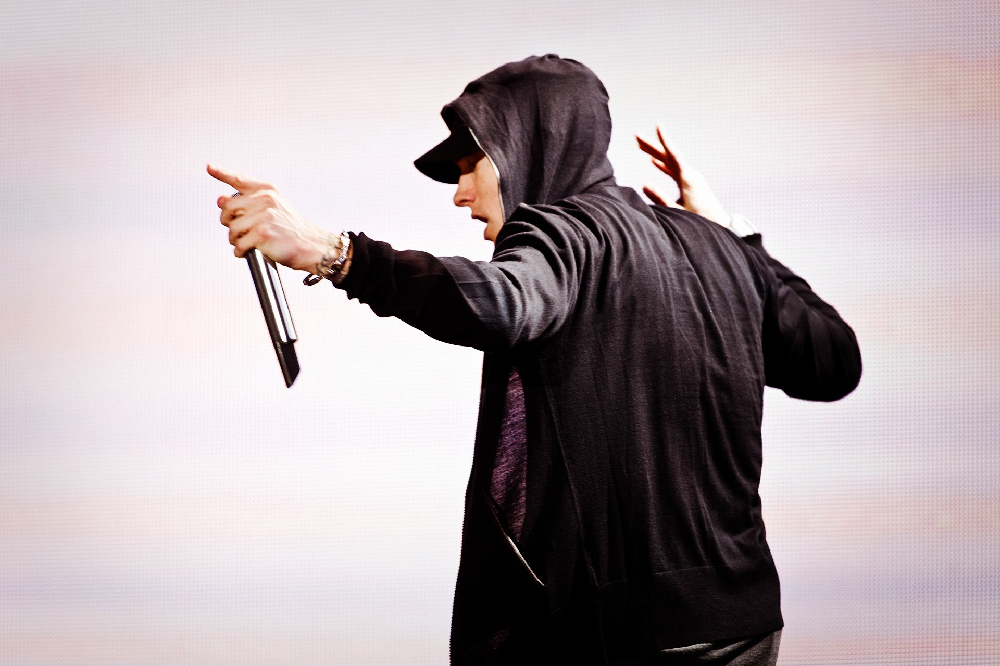
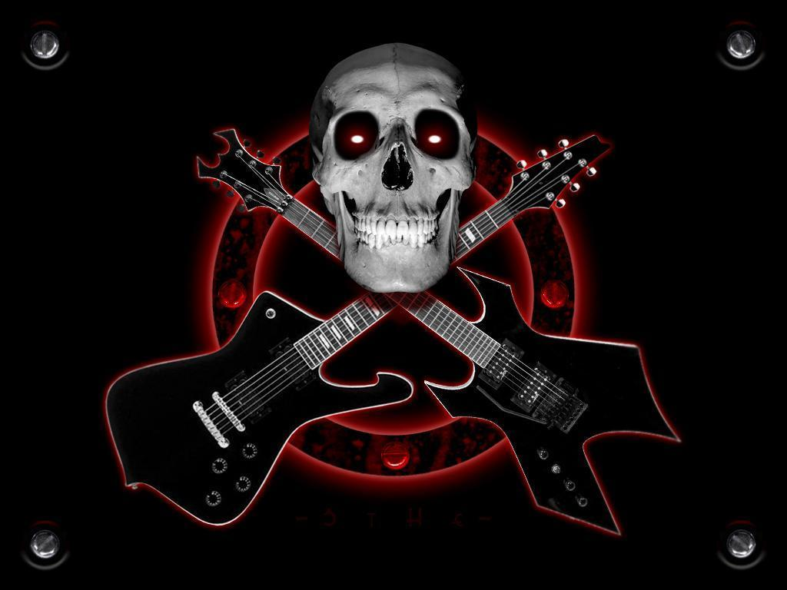
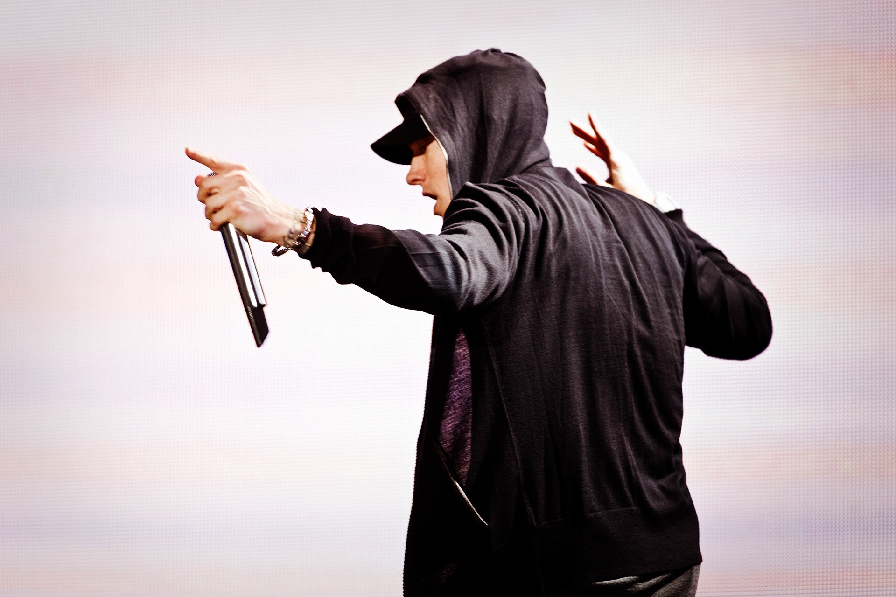

GRAPHICAL USER INTERFACE DESIGN
The site and the subsequent web app will be well laid out and will
follow material design by google. We are planning to make it as simple
and aesthetically pleasing as possible. There will be a lot less clutter
and most of the site will be operable from the first page itself, not requiring
multiple anchor tags to change web page.
WEB APP AND THE STREAMING SITE
We plan to write all the html and CSS using the bootstrap library so that
the site will be well formatted to work in different screen sizes. It negates
the need to define different style formatting for different devices with different
screen sizes. The web app which will work in mobile devices will use the phone’s web
browser to fetch the data from the main site and display it on the browsers interface
with adjusted buttons for pause/play, forward and back.
TECHNOLOGIES AND LANGUAGES USED
All the site and front end designing will be done using HTML5, CSS and bootstrap
while the backend fetching and streaming will run using JS, and python.

 


